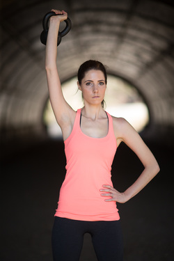

Meet Katherine
Owner, Certified Personal Trainer & Acupuncturist in training
Hi, I’m Katherine! Thank you for stopping by. I am a NASM certified personal trainer, avid runner and yogi. I am currently studying Acupuncture and expanding my knowledge of physical and mental healing, combing both Western and Eastern philosophies. I believe in a holistic wellness approach that combines nourishing the body, mind and soul.
My goal is to help you achieve your best and learn to love your body for all the strength, agility, flexibility and beauty it holds. I believe your attitude in the gym and the effort you put forth in your workouts transfers over into how you live your life. I use my passion for fitness to inspire and motivate my clients to help them transform their bodies, as well as their overall well-being.
As no two people are the same, I create completely customized fitness & health programs that combine multiple modalities to fit your individual needs. As I believe that on-going support and communication is vital for success, I am committed to my clients and always on hand.
Personal Training
(In-Home/Outdoors)
The Body Achieves What the Mind Believes
I train clients in their homes, home gyms, or outdoors throughout Manhattan and Brooklyn. I utilize a dynamic integrated training style that will always keep you on your toes (no pun intended!). My specialties include:
TRX
Kettlebells
HIIT training
Yoga
Pilates
Weight-loss
Pre/Post-Natal
Injury prevention for athletes
Injury recovery
Physical fitness should be challenging and FUN. My mission is not only to help my clients improve their fitness level, but also to educate them, so that the changes we make together can be maintained throughout a lifetime.
I wouldn't expect you to commit to a pair of pants without trying them on, I don't expect you to commit to me without a test ride first. That's why I offer a free in-person consult and evaluation, which usually takes about 45min.
Remote
Fitness Coaching
Unable to meet in person, or need that additional accountability throughout the week? I offer customized training plans to fit YOU. Plans include:
In-dept Initial assessment
Daily/weekly/monthly goals
Customized workouts to fit your goals, training location & equipment availability. You don't need a top of the line gym to get in shape, if you have enough space to lay down I can create a workout plan for you!
Bi-weekly updates/check-in's and 100% full access to me
Nutrition Counseling
Love Yourself Enough to Live a Healthy Lifestyle
Food nourishes not just our bodies, but our minds as well. Food should be enjoyed and celebrated, not feared and scrutinized. I combine Western and Eastern nutrition philosophies and work with you to create a whole, integrated program that includes making the right choses to feed your body and mind. Working together, we will come up with a plan that fits you and your lifestyle. I will guide you on how to select food choices that will build a healthy beautiful body that you feel good in.
contact